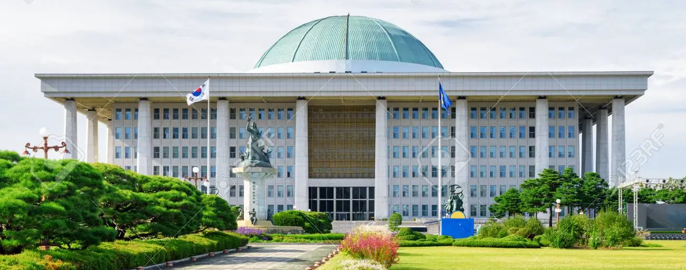
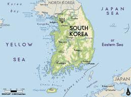
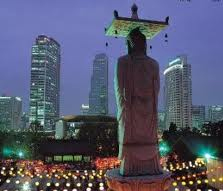
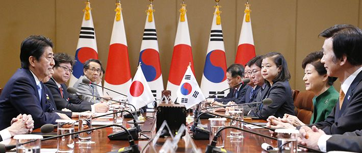

Historia de Corea
Los coreanos comparten una historia ininterrumpida en el mismo territorio que se remonta miles de años atrás. La península actual, dividida políticamente, es un reflejo de épocas remotas como el período de los Tres Reinos (57 a.C.-668), durante el cual las dinastías Goguryeo, Silla y Baekje compitieron por el control de un dominio que se adentraba en Manchuria. La relación de Corea con poderosos vecinos como China y Japón ha condicionado tradicionalmente su destino, mientras que los vínculos con Occidente añaden aún más complejidad a la conciencia nacional.

Ubicación Geográfica
La República de Corea conocida como Corea del Sur, es un país de Asia oriental, ubicada en la parte sur de la península de Corea. Limita al norte con la República Democrática Popular de Corea (Corea del Norte, o Norcorea), con la cual formó un solo país hasta 1945. Al este se encuentra el mar del Japón o el mar del Este, al sur el estrecho de Corea, que lo separa de Japón, y al oeste el mar Amarillo. Su territorio comprende la mitad sur de la península de Corea englobando unas tres mil islas que la rodean, dentro de las cuales se destacan Jeju, Ulleungdo y Dokdo. Aproximadamente la mitad de la población del país vive en su capital, Seúl, o en su zona metropolitana, que es una de las. Corea es una de las civilizaciones más antiguas del mundo.


Gobierno y Política:
El gobierno se define como una democracia representativa. Como muchas democracias, en el país se presenta la división de poderes en ejecutivo, judicial y legislativo. Las ramas ejecutiva y legislativa operan principalmente a nivel nacional, aunque varios ministerios en el poder ejecutivo también realizan funciones locales. Los gobiernos provinciales son semi-autónomos y cuentan con órganos legislativos propios. La rama judicial opera tanto a nivel nacional como local.
El jefe de Estado es el presidente, actualmente Lee Myung-bak, es elegido por voto directo popular para un único mandato de cinco años. Además de ser el más alto representante de la república y el comandante en jefe de las fuerzas armadas, el presidente también nombra al primer ministro (después de ser aprobado por el parlamento) y preside el Consejo de Estado. El primer ministro es el jefe de gobierno del país, y desempeña muchas de las funciones del poder ejecutivo. El parlamento coreano, unicameral, se llama Asamblea Nacional, o Gukhoe Sus miembros ejercen mandatos de cuatro años. La legislatura tiene actualmente 299 escaños, de los cuales 243 son elegidos por voto regional y los restantes son distribuidos por representación proporcional. La Institución Judicial más elevada es el Tribunal Supremo, cuyos jueces son nombrados por el presidente con el consentimiento del parlamento.
La estructura del gobierno surcoreano está determinada por la Constitución de la República de Corea. The World Factbook describe la democracia surcoreana como una "democracia moderna completamente funcional".
